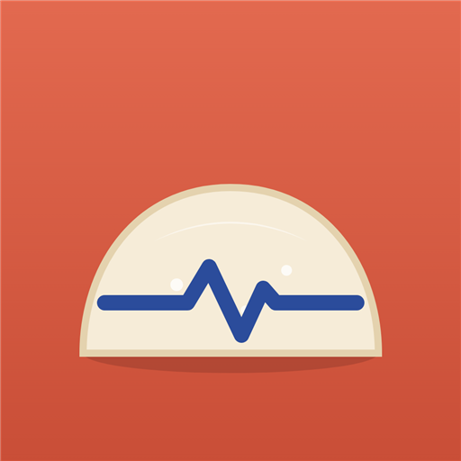
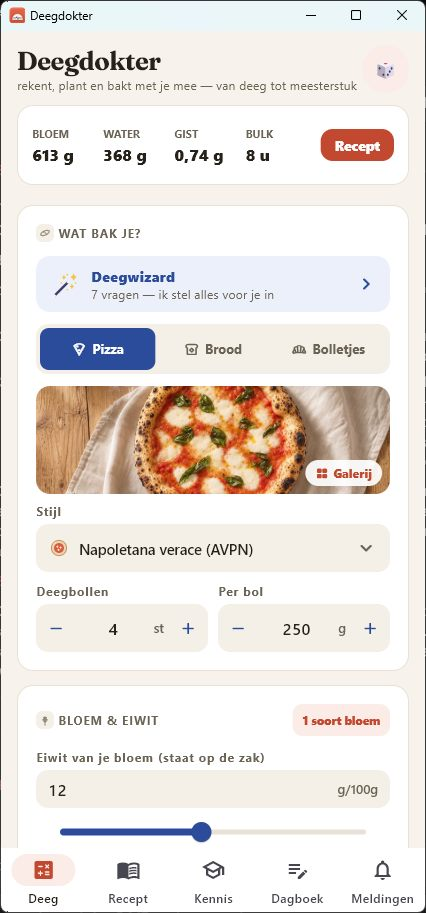
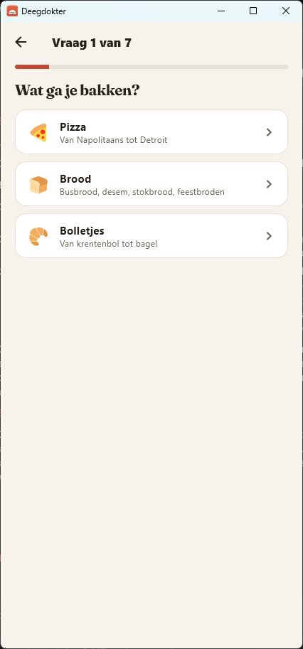
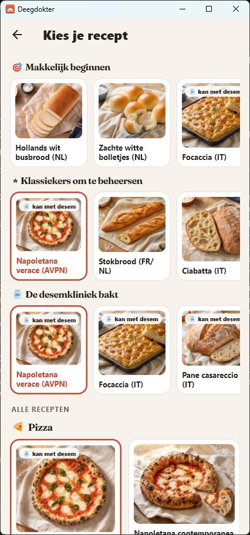
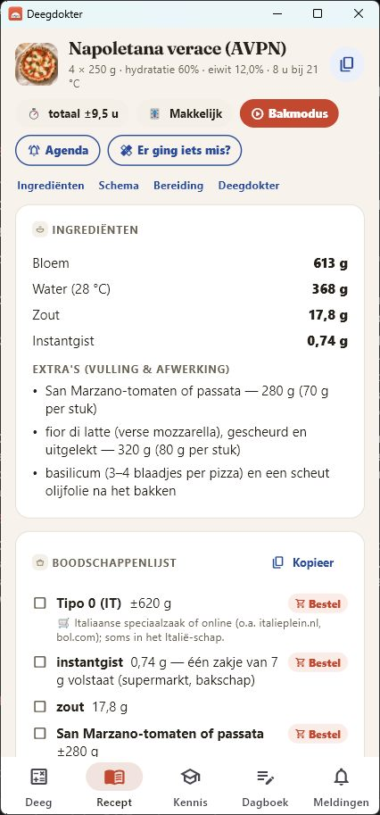
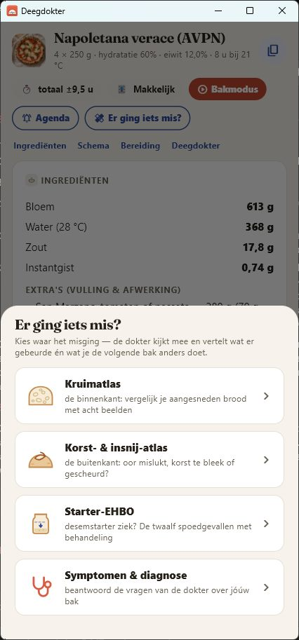
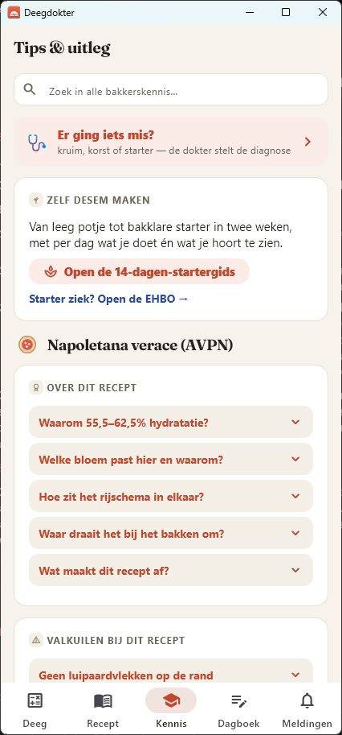

Jouw bakcoach voor brood, pizza en bolletjes: rekent je deeg uit, plant je bakdag — en helpt als het misgaat.
Gratis te proberen — je eerste begeleide bak is van de dokter · Pro eenmalig, geen abonnement.
Nu in gesloten bèta voor Android en iPhone — meld je aan met je Gmail-adres.
Kies uit 67 authentieke recepten — van Napolitaanse pizza tot pain au levain en krentenbollen — en de app rekent je exacte recept uit in bakkerspercentages, afgestemd op jouw meel en jouw agenda.
Bloem, water, zout en gist exact uitgerekend — met automatisch het juiste meel per recept, voordeeg (poolish/biga) en desem. Plus een boodschappenlijst met winkeladvies: welke zak, welke winkel.
Zeven korte vragen — wat bak je, wanneer wil je eten, hoe warm is je keuken — en je recept staat klaar, gepland óm je dag heen.
Zie in één oogopslag of jouw meel bij je recept past: krachtmeter, hydratatiering en meelpaspoort. De dokter merkt op wat er beter kan — vóórdat je deeg mislukt.
Tijdschema op de klok, meldingen op het moment dat je deeg je nodig heeft, en een Bakmodus die je stap voor stap door je bakdag loodst — met volledige donkere modus voor wie vroeg opstaat of laat doorbakt.
Mislukt er iets? Twee gerichte vragen en je hebt een diagnose met een concrete fix. Plus een kennisbank vol bakkersantwoorden en techniekkaarten voor opbollen, vouwen, insnijden en uitrekken.
Leg je resultaten vast in het bakdagboek en zie patronen die geen recept je kan vertellen.
Nergens anders: je desemstarter krijgt een eigen dossier bij de dokter. Van je allereerste starter tot een noodgeval op de aanrecht.
Van leeg potje tot bakklare zuurdesemstarter in twee weken, met per dag wat je doet én wat je hoort te zien.
De dokter leert het ritme van jóuw starter kennen: wanneer hij piekt, hoe snel hij verdubbelt en wanneer hij klaar is om te bakken.
Twaalf spoedgevallen — van hooch tot de gevreesde roze zweem — met per geval de diagnose en de behandeling.
Tik het beeld aan dat het meest op jouw baksel lijkt — je krijgt meteen een diagnose en een concrete fix voor de volgende bak.
De binnenkant: vergelijk je aangesneden brood met acht beelden, van dichte kruim tot grote gaten.
De buitenkant: oor mislukt, korst te bleek of gescheurd? Het beeld vertelt wat er in de oven gebeurde.
Je starter in beeld: van slapend tot op z'n piek — en alles wat er tussenin mis kan gaan.






Elke bakker heeft weleens een deeg dat niet doet wat het belooft. Deegdokter kijkt mee, stelt een diagnose en vertelt wat je de volgende keer anders doet.
"55% effectief vocht zit onder de sweet spot van deze bloem, en tóch klopt het: dit recept vraagt bewust een stevig, droog deeg dat zijn vorm houdt. Niets aanpassen dus — het stugge rollen hoort erbij."
Zes uitgewerkte antwoorden uit de kennisbank van de app — vrij te lezen, ook zonder Deegdokter op je toestel.
Bloem is altijd 100%. Hoe je hydratatie, zout en gist uitrekent — met rekenvoorbeeld en richtwaarden per broodsoort.
🍕Hoeveel water in pizzadeeg? Hydratatie, zout, balgewicht en rijstijd voor tien pizzastijlen, van napoletana tot teglia.
💧Wat 55, 65 en 75 procent met je deeg doen, welke band bij welk meel past — en waarom volkoren en rogge anders zijn.
🫙Het verloop van veertien dagen in fasen: wat je doet, wat je hoort te zien, en waar het meestal misgaat.
🚑Hooch, roze zweem, schimmel, stilstand: de twaalf spoedgevallen met per geval de diagnose en de behandeling.
🌡️De kerntemperatuur per broodsoort, van 88 °C voor rijk deeg tot 100 °C voor rogge — en waarom kloppen niets bewijst.
Korte, eerlijke antwoorden — dezelfde kennis die in de app zit.
Reken op 20 tot 30 procent actieve desemstarter ten opzichte van het meelgewicht: voor een brood met 500 gram meel dus 100 tot 150 gram starter. Deegdokter rekent de bloem en het water in je starter automatisch mee in de totalen.
Dat hangt af van de stijl: Napolitaans pizzadeeg (Napoletana verace) zit op 55,5 tot 62,5 procent hydratatie — water ten opzichte van het meel — terwijl luchtige plaatpizza's ruim boven de 70 procent zitten. Deegdokter rekent per stijl de juiste hoeveelheid water op de gram uit.
Volkorenmeel drinkt meer water dan witte bloem, dus een starter op volkoren voelt al snel aan als een dikke pasta. Meestal is er niets mis. De Starter-EHBO in Deegdokter herkent twaalf spoedgevallen — van hooch tot de roze zweem — en vertelt of en hoe je moet ingrijpen.
Brood is gaar bij een kerntemperatuur van 93 tot 99 graden Celsius, afhankelijk van het soort: zachte broden en busbrood rond 93 tot 96 graden, stevige (desem)broden 96 tot 99 graden.
Deegdokter is de Nederlandse deegcalculator die pizzadeeg, brood en zuurdesem uitrekent in bakkerspercentages, met 67 authentieke recepten, een deegwizard van zeven vragen, een complete desemkliniek en een ingebouwde deegdokter die mislukte baksels diagnosticeert.
Deegdokter is gratis te proberen — je eerste begeleide bak is van de dokter. Daarna is Pro een eenmalige aankoop, geen abonnement.